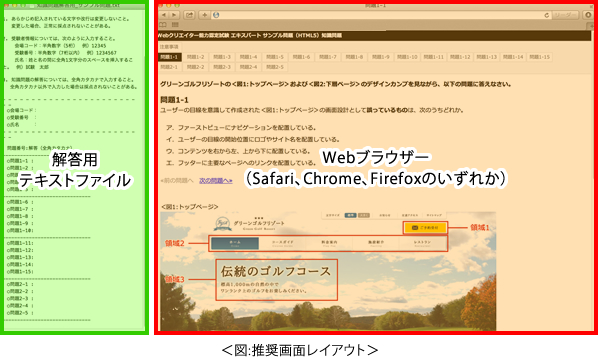
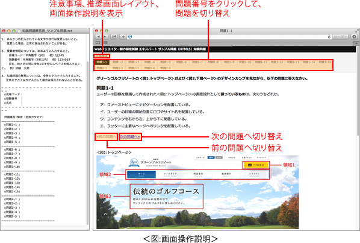

注意事項
知識問題を解答するにあたり、以下の注意事項に留意してください。
- 知識問題の制限時間は20分です。
- 「知識用」フォルダーには解答するために必要なファイルが格納されています。
- 知識問題は、「問題1-1」から「問題1-15」と「問題2-1」から「問題2-5」の全20問で出題されています。
- 「問題1」のデザインカンプは、画像編集ソフトで作成されており、特定のWebブラウザーのスクリーンショットを表すものではありません。
- 知識問題は、HTML5およびCSS 2.1、CSS3に対応しています。ただし、HTML5の比較の説明として、HTML 4.01およびXHTML 1.0の説明が使用されることがあります。
※ 試験問題に記載されている会社名又は製品名は、それぞれ各社の商標又は登録商標です。なお、試験問題では、® 及び ™ を明記していません。
推奨画面レイアウト
各ウィンドウの配置は、以下の推奨画面レイアウトを参考に配置してください。
- 知識問題では、解答用テキストファイル、Webブラウザー（Safari、Chrome、Firefoxのいずれか）の二つのウィンドウを同時に表示させておきます。
- 推奨する画面のレイアウトは＜図:推奨画面レイアウト＞の通りです。

- 解答用テキストファイル、Webブラウザーのウィンドウは、ドラッグすることにより位置や大きさを調整することができます。
- 知識問題操作練習を行う際にレイアウトを自由に設定できます。
画面操作説明
各ウィンドウ内のリンクに関する操作は＜図：画面操作説明＞の通りです。
